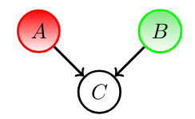
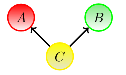
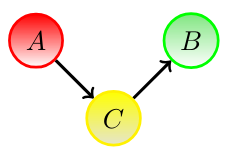
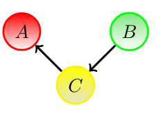

Bayesian Networks: Conditional Independence
During the lectures on Bayesian networks, you were already introduced to the concept of conditional (in)dependence. To visualize this, we can use the program Bayes Server. Follow this link to navigate to the online application. If you prefer an offline version, you can download it here.
When you start up the Bayes Server, you see all kinds of predefined networks. Note that you can also create your own network. For now, however, it suffices to open an existing network. Now we will first illustrate some examples of conditional independence with the Asia network.As you can see, the network has eight different variables, each with their own probabilities as shown in the bar graphs. At the top, you can click on analyze and then D-Separation → D-Separation Display.
At that point a window appears where you can select the variable that will serve as the source node. The D-separation algorithm will try to find a path from this node to all the others. Is there an unblocked path to a node? If so, it colors green. Otherwise, it colors red. A green node and a red node are respectively conditionally dependent and conditionally independent of the selected source node. Now we can play around a bit by clicking on the bar graphs in the nodes. When clicked on, these nodes become evidence. This allows us to see which nodes become / no longer are reachable when an intermediate node becomes evidence.
Now think back to the lectures. There are a total of four scenarios in which a path is blocked:
When the intermediate node is no evidence and the pattern forms a collider (both A and B point to C).
When the intermediate node is evidence and the pattern forms a fork (C points to A and B).
When the intermediate node is evidence and the pattern forms a chain (A points to C and C points to B).
When the intermediate node is evidence and the pattern forms a chain (B points to C and C points to A).

Practice for yourself:
- Try reproducing the four scenarios in the opened Asia network. Before you click the "D-Separation Display" button, try to imagine which nodes will turn green and which will turn red. Do your expectations match the results?
- How does the result change if you select multiple nodes as source nodes?
A possible example of a collider in the Asia network is the following: Choose Has Lung Cancer as source node. Remember that in the case of a blocked path with a collider, the intermediate node should not be a evidence. With Tuberculosis Or Cancer as an intermediate node, we see that the path to Has Tuberculosis is blocked.
A possible example of a fork in the Asia network is the following: Choose Has Lung Cancer as source node. Then choose Smoker as evidence by clicking on the bar graph. Next, you see that the previously accessible node Has Bronchitis is now no longer accessible.
A possible example of a chain in the Asia network is the following: Choose Visit to Asia as source node. Then choose Has Tuberculosis as evidence by clicking on the bar graph. Next, you see that the previously accessible node Tuberculosis or Cancer is now no longer accessible.
Finally, we look at what happens when we select multiple nodes as source nodes: We choose Visit to Asia and Smoker as source nodes. Then pick Has Tuberculosis as evidence by clicking on the bar graph. Now take a look at Tuberculosis or Cancer. There is a blocked path from Visit to Asia to Tuberculosis or Cancer but because the path from Smoker to Tuberculosis or Cancer is not blocked, this node is still conditionally dependent. So if there is an unblocked path from one of the source nodes to a node, then that node is considered conditionally dependent on the source nodes.
Don't hesitate to experiment with other networks yourself. Try to find examples of the four scenarios in other networks. This way, your understanding of conditional independence can only increase.